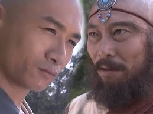

Hồi 03: Người được vợ, kẻ vạ lây

Đoàn Dự quay đầu lại, thấy một hán tử ăn mặc theo lối gia nhân đang hấp tấp đi tới, chính là Lai Phúc Nhi,
người lúc nãy chàng nhìn thấy qua khe vách. Y đi đến gần, hành lễ nói: “Tiểu nhân Lai Phúc Nhi,
vâng lệnh phu nhân đến đưa công tử đi mượn ngựa.” Đoàn Dự gật đầu nói: “Nếu vậy càng hay!”
Lai Phúc Nhi liền đi trước dẫn đường, qua khỏi rừng tùng rồi, chuyển qua hướng bắc, đi vào một con đường nhỏ
chừng sáu bảy dặm đến trước một tòa nhà lớn. Y tiến lên cầm vòng cửa gõ nhẹ hai tiếng, ngừng lại một chút,
lại gõ thêm bốn tiếng, rồi lại gõ thêm ba tiếng. Cánh cửa kêu kẹt một cái rồi mở ra.
Lai Phúc Nhi đứng ngoài cùng người mở cửa nói với nhau một hồi tiếng lóng. Lúc đó trời đã tối mịt,
trên trời ánh sao lờ mờ, Đoàn Dự lại nghĩ đến pho tượng ngọc mỹ nhân dưới đáy sông.